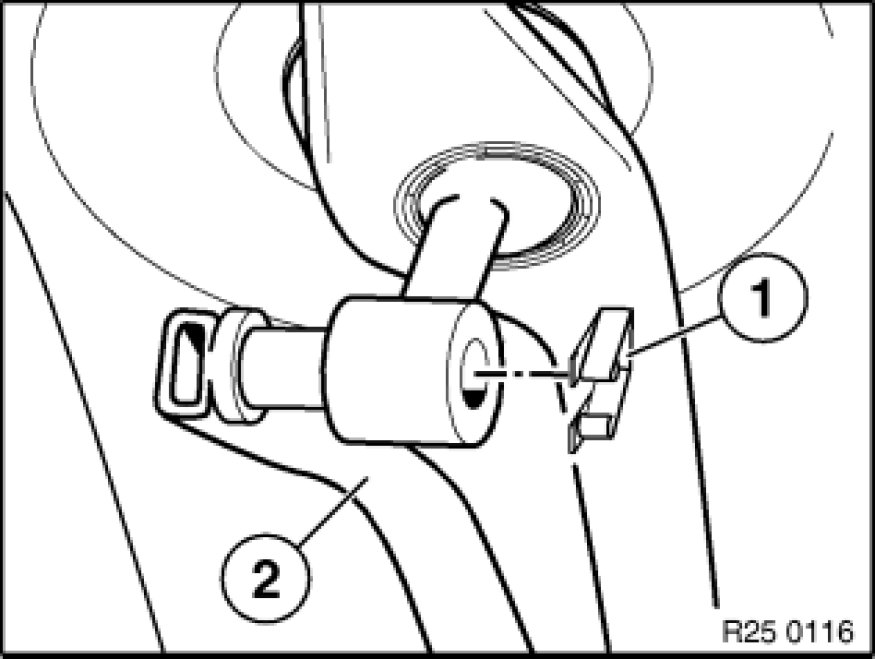
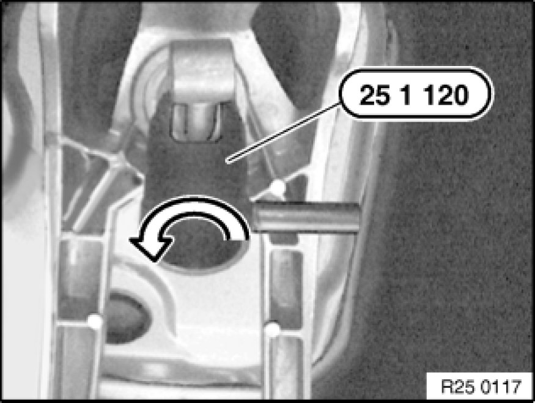
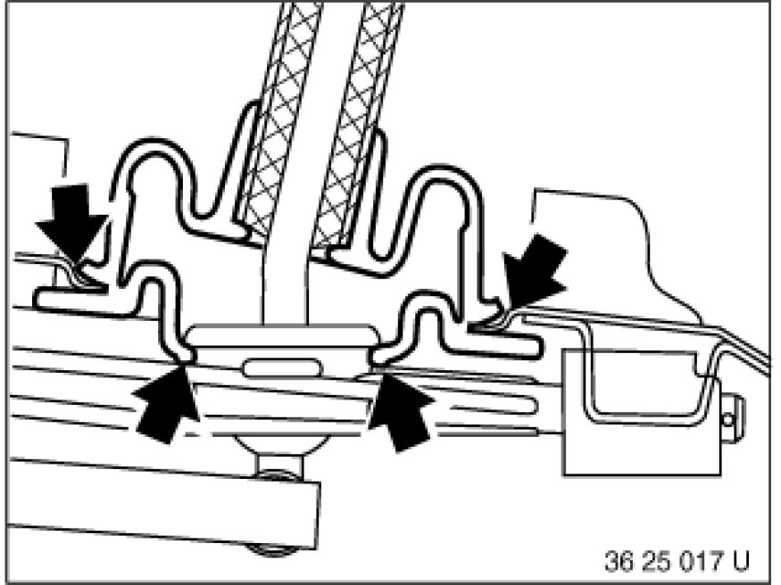
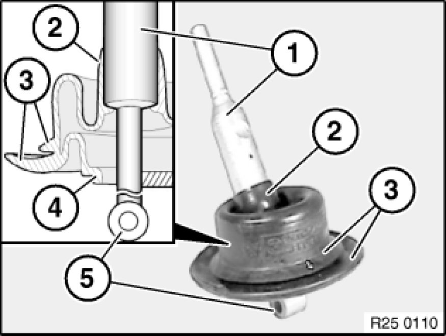
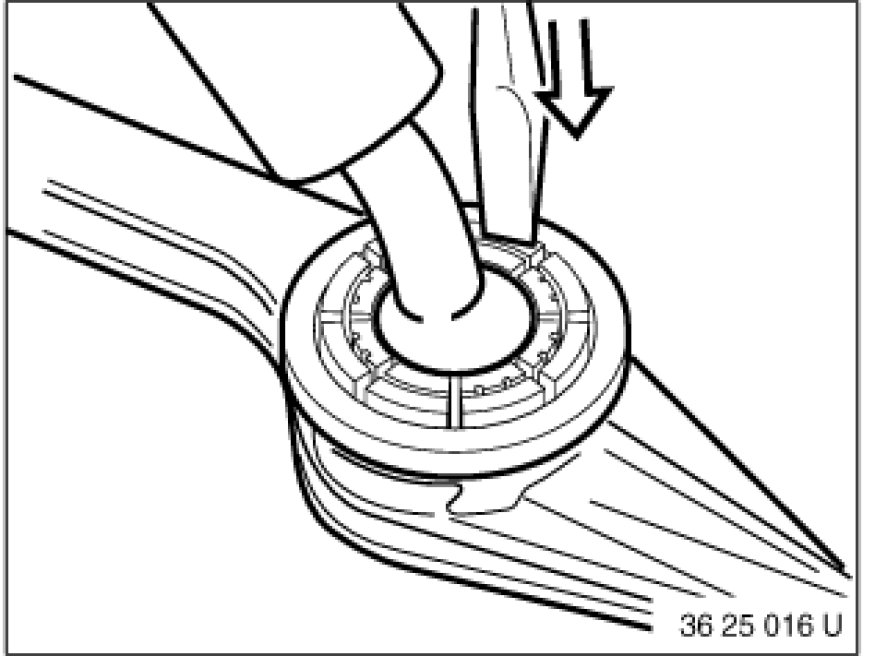

25 11 000 Removing and Installing Shift Lever
25 11 000 - Removing and installing shift lever

Special tools required:
- 25 1 120

Necessary preliminary tasks:
- Remove reinforcement carrier.
- Remove rear underbody protection Removing and Installing/Replacing Rear Underbody Protection.
- Remove heat shields.
- Remove knob 25 11 071 Replacing Knob for Shift Lever for shift lever.
- Remove gaiter 25 11 081 Replacing Shift Lever Cover for shift lever cover.

If necessary
Support transmission with workshop jack.
Remove screws and nuts.
Remove cross-member.
Tightening torque 23 71 1AZ/2AZ 23 71 Transmission Mounts.

Remove shift rod 25 11 101 Replacing Shift Rod(2).
Installation Note:
Grease shift rod pin.
Key:
1. Retainer
2. Shift rod

Important!
New retaining clips fitted as from 04.08.
Retaining clip must interlock captively with retaining web (1) behind shift rod pin.

Insert special tool 25 1 120 into mount and turn 90° counterclockwise.
Press mount upwards out of shift arm.

Feed U-gaiter from shift arm and out of body cutout.
Lift out shift lever.
Installation:
Pull U-gaiter from below completely over shift arm receptacle.

Installation:
Pull U-gaiter bead (4) over receptacle on shift arm and pop U-gaiter lips (3) into body cutout.
Make sure the arrow on the upper U-gaiter lip (3) is seated in the direction of travel and crossways to the shift lever eye (5).
Key:
1. Shift lever
2. U-gaiter moulded section
3. U-gaiter lips
4. U-gaiter bead
5. Shift lever eye

Installation Note:
Grease shift lever ball.
Fit mount on shift arm receptacle.
Align retaining lugs of mount to openings in receptacle (crossways to direction of travel).
Press shift arm with mount downwards until mount snaps audibly into place (if necessary, use a pressing-in tool).